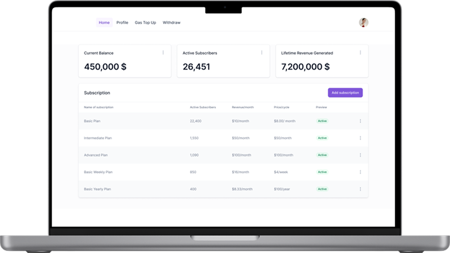
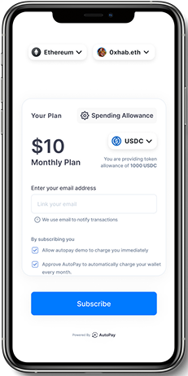

Find us on Product Hunt
Refining automated payments in Web3
One stop solution for subscriptions, salaries, SIPs and more
automated payments in web3.



Custom APIs for Merchants
Merchants & Devs can customize the UI of the subscription page as well the the data points collected prior to the checkout to build on top of Autopay

Mobile compatible checkout
We understand the current complexities with web 3 UX and hence have built the checkout flow such that it is compatible for payments from desktop as well as mobile wallets

Cross-chain deposits and withdrawals
Ethereum, Polygon, Arbitrum and Optimism supported. The user can deposit and merchant can withdraw from any of these 4 chains using the top 4 (by TVL) stable coins USDC, USDT, DAI and BUSD.

Completely secure and on-chain
Each merchant has a dedicated contract deployed by their EOA wallet on their preferred chain. All data and automation jobs dedicated to the merchant dashboard are stored and executed on-chain.

Visibility and control on all token allowances
Each user will have a customised user dashboard to view all their active subscriptions’ details in one place. You can update or revoke token allowances by accessing this dashboard.
Connect with us to get you started ⚡
We'll help you setup everything you need to accept recurring payments in crypto and grow your business anywhere on the planet.